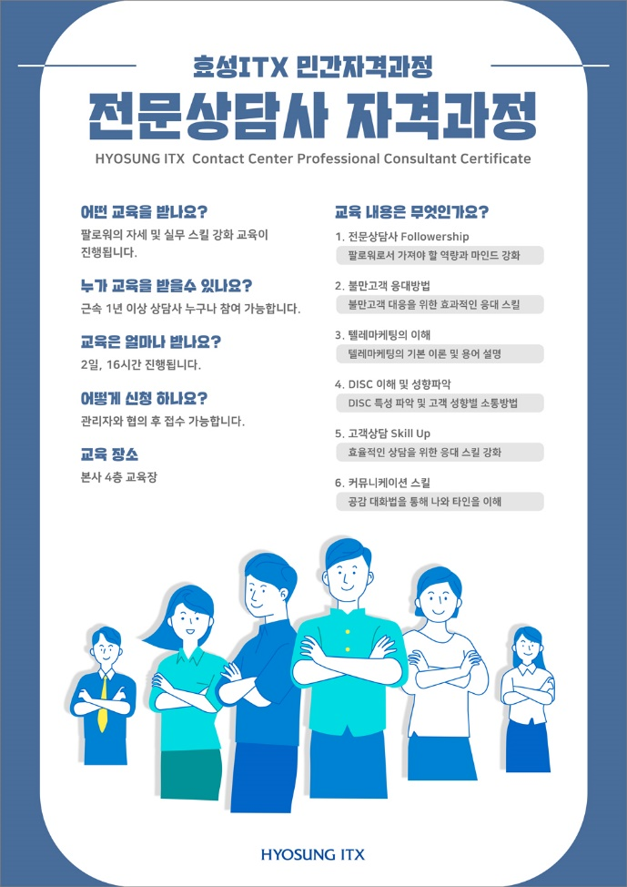

효성ITX 민간자격과정입니다. 전문 상담사로서의 가치를 증명하고 내일의 나를 완성하는 2일 16시간, 실무 역량 강화의 시간입니다.
고객은 답변이 아니라 해결을 원합니다. 팔로워십부터 불만고객 응대, 성향별 소통까지 현장에서 바로 쓰는 스킬을 익히고, 수료 후 시험으로 그 역량을 자격으로 증명합니다.
불만고객을 만나면 말문이 막힌다
→ 교육 후
감정을 먼저 가라앉히고 해결로 이끄는 응대를 한다
고객마다 반응이 달라 응대가 흔들린다
→ 교육 후
DISC로 성향을 읽고 그에 맞는 언어로 소통한다
경력은 쌓이는데 증명할 것이 없다
→ 교육 후
수료와 시험으로 전문상담사 자격을 손에 쥔다
팔로워의 자세와 실무 스킬을 함께 다룹니다. 이론으로 기준을 세우고 사례로 몸에 익혀, 교육 다음 날 콜부터 달라지도록 구성했습니다.
팔로워로서 가져야 할 역량과 마인드 강화
불만고객 대응을 위한 효과적인 응대 스킬
텔레마케팅의 기본 이론 및 용어 설명
DISC 특성 파악 및 고객 성향별 소통방법
효율적인 상담을 위한 응대 스킬 강화
공감 대화법을 통해 나와 타인을 이해
HYOSUNG ITX Contact Center Professional Consultant Certificate — 교육 수료와 시험 응시까지 마쳐야 자격이 부여됩니다.
근속 1년 이상 상담사라면 누구나 참여할 수 있습니다.
관리자와 협의 후 접수합니다. 장기근속자 순으로 접수를 권장합니다.
2일 16시간 전 과정을 이수합니다. 출결은 QR 앱으로 확인합니다.
수료 후 자격시험에 응시하여 전문상담사 자격을 취득합니다.
교육 당일 출결은 고용24 직업훈련 출결관리 앱으로 확인합니다. 교육 전에 앱 설치 → 회원가입 → 실명인증 → 기기등록까지 마쳐 주셔야 당일 출결 체크가 가능합니다. 등록한 기기로만 출결이 가능하니 교육 당일 사용하실 휴대폰으로 등록해 주세요.
2일 과정입니다. 이틀 모두 출결 체크가 필요하며, 출결이 확인되어야 수료 및 시험 응시가 가능합니다.
교육 전 영상 시청으로 전문상담사 자격과정을 먼저 경험해 보세요.
“여러분의 새로운 도약을 응원합니다.
꼭 만나요!!”
